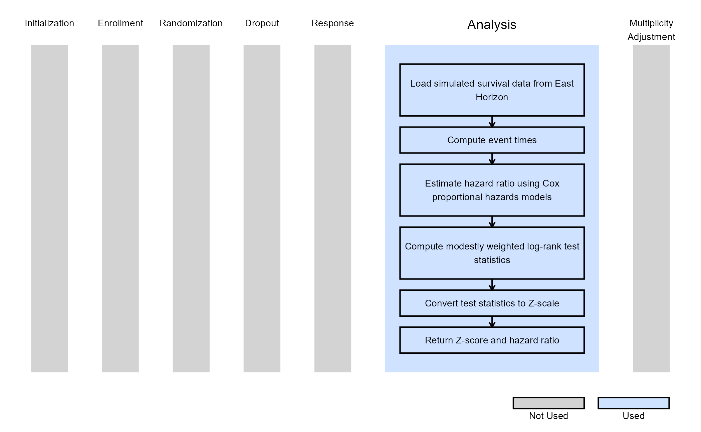

Dual Endpoints - Analysis
Gabriel Potvin, Anoop Singh Rawat, Pradip Maske
February 19, 2026
DEPAnalysis.RmdThis example is related to the Integration Point: Analysis - Dual Endpoints. Click the link for setup instructions, variable details, and additional information about this integration point.
- Study objective: Two Arm Confirmatory
- Number of endpoints: Dual Endpoints
- Endpoint type:
- Time-to-Event for Example 1 (from dual Time-to-Event - Time-to-Event or Time-to-Event - Binary design)
- Binary for Example 2 (from dual Time-to-Event - Binary design)
- Task: Explore
Note: This example is compatible with both Fixed Sample and Group Sequential statistical designs. The R code automatically detects whether interim look information (LookInfo) is available and adjusts the analysis parameters accordingly.
Introduction
The following examples illustrate how to integrate new analysis capabilities into East Horizon using R functions in the context of 2-arm clinical trials with dual endpoints. These functions can be customized to support complex evaluation rules, correlated outcomes, and flexible statistical designs.
Note: Each script in this example is designed to be applied to an individual endpoint within a Dual Endpoint (DEP) design, rather than to both endpoints simultaneously.
The first example illustrates how to perform a modestly weighted log-rank test on a time-to-event (TTE) endpoint, while the second example demonstrates how to perform a Fisher’s Exact Test on a binary endpoint. Together, they show how to independently analyze different endpoint types within East Horizon’s dual-endpoint analytical framework.
In the R directory of this example you will find the following R files:
AnalyzeDEPUsingModWtLogRank.R - Performs a modestly weighted log-rank test on a time-to-event endpoint.
AnalyzeDEPUsingFisherExact.R - Performs a Fisher’s Exact Test on a binary endpoint.
Example 1 - Modestly Weighted Log-Rank Test for TTE Endpoint
This example is related to this R file: AnalyzeDEPUsingModWtLogRank.R
The function AnalyzeDEPUsingModWtLogRank demonstrates how to compute a modestly weighted log-rank test statistic for a time-to-event endpoint within a DEP design.
The function reads subject-level simulated data, filters observations up to the current analysis time, and computes observed times and event indicators based on censoring and response times. A Cox proportional hazards model is used to estimate the hazard ratio between treatment and control arms, which provides an interpretable measure of treatment effect.
The modestly weighted log-rank test (Magirr, 2019) gives lower weights to early events and increases sensitivity to late ones, making it particularly useful when delayed manifestation of treatment effects is expected. The weighting scheme is based on the delay periods defined in East Horizon, which represent the expected onset times of the treatment effect.
This approach is flexible and handle both fixed sample and group sequential designs with multiple interim analyses.
The figure below illustrates where this example fits within the R integration points of Cytel products, accompanied by a flowchart outlining the general steps performed by the R code.

Example 2 - Fisher’s Exact Test for Binary Endpoint
This example is related to this R file: AnalyzeDEPUsingFisherExact.R
The AnalyzeDEPUsingFisherExact function performs analysis for a binary endpoint within a DEP design using a Fisher’s Exact Test, which compares the proportion of responders between treatment arms without relying on asymptotic assumptions. This is especially useful for smaller studies or endpoints with low event rates.
The function extracts the relevant response and treatment information from simulated patient data, constructs a 2×2 contingency table, and computes both the test statistic and the associated p-value. The results are then expressed on the Z-scale for integration into East Horizon’s simulation engine.
The figure below illustrates where this example fits within the R integration points of Cytel products, accompanied by a flowchart outlining the general steps performed by the R code.